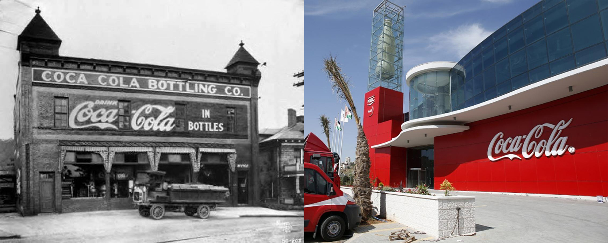

Czym jest Cola?
Marka napoju gazowanego przedsiębiorstwa The Coca-Cola Company. Powstała pod koniec XIX wieku i jest obecnie jedną z najpopularniejszych marek na świecie. Od 1960 roku charakterystyczny kształt butelki jest także prawnie zastrzeżony. Coca-cola jest jedną z ikon kultury masowej XX wieku.
Historia Coca Coli
Receptura coca-coli została opracowana w 1886 roku przez J.S. Pembertona, farmaceutę z Atlanty. Był to jego drugi napój na bazie liści koki i orzechów koli (pierwszy nosił nazwę Pemberton’s French Wine Coca). Początkowo sprzedaż coca-coli nie była rentowna, jednak po przejęciu jej przez Asę Candlera (który w 1893 roku zarejestrował oficjalnie markę) i jego sprawnym zabiegom marketingowym napój stał się hitem, a zyski ze sprzedaży osiągnęły 50 mln USD w 1912 roku. Po śmierci Candlera w 1919 przedsiębiorstwo przeszło w ręce bankiera, Ernesta Woodruffa, a później w ręce jego syna Roberta Woodruffa, który kierował spółką do śmierci w 1985 roku.
W 1906 roku rozpoczęła się ekspansja przedsiębiorstwa poza Stany Zjednoczone.
Coca-cola trafiła m.in. na Kubę i do Panamy. Coca-cola pojawiła się w butelkach w 1894 roku za sprawą dwóch przedsiębiorców, którzy otrzymali od Asy Candlera prawa do rozlewania napoju za cenę symbolicznego jednego dolara. W 1955 roku coca-cola pojawiła się także w puszkach.
Napój trafił nawet do Chińskiej Republiki Ludowej, gdzie w 1978 roku władze państwowe zezwoliły na jego sprzedaż.
W 1985 roku przedsiębiorstwo próbowało zmienić formułę napoju. Po wielu przygotowaniach wprowadzono ją na rynek, jednak na skutek protestów przywrócono poprzednią recepturę coca-coli i sprzedawano równocześnie pod nazwą „Coca-Cola Classic”. Ostatecznie nowa formuła napoju nie przyjęła się i została wycofana przez koncern.
W 2009 roku wprowadzono automat Coca-Cola Freestyle.

Warianty Coca Coli
Coca Cola w swojej ofercie posiada wiele napojów:
- Coca-Cola- klasyczna
- Cherry
- Vanilla
- Geordia Peach
- Coca-Cola Zero
- Coca-Cola Light
Praca u nas
Chcesz u nas pracować?
Chcesz byś częścią Coca Coli?
Jeżeli jesteś zainteresowany współpracą to zapraszamy do zapoznania się z ofertami pracy.